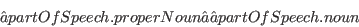

- Q
- What is a form and what is a lexical entry? For example should initialisms be considered different forms?
- A
- In general a form is considered to be “orthography-invariant”, that is that the form should be a single entity across different orthographies or media. In contrast a lexical entry is “syntax-invariant”, this means that it should always become the same entity once syntactic processing is complete. Initialism are clearly not “syntax-invariant” (as they consist of a different number of words), so should be different lexical entries.
- Q
- Regarding the relations between lexical entries, if I understood it correctly, what are formVariant and lexicalVariant?
- A
- In general this follows from the question of what is a form and what is a lexical entry?
- Q
- Regarding the relations to be established between Senses, I am not so sure of the advantages in using the broarderSense and narrower relations compared to underspecification of these relations? Does introducing such relations not duplicate information already in an ontology?
- A
- In fact the senses are quite underspecified, and the referenced ontology is intended to contain the precise and rigorous semantics. The use of sense relations is intended primarily for lexical processing using the lexicon.
- Q
- Regarding the morphological information, is all this information needed for my application? Do we really need so much detail?
- A
- No, of course not. In fact the minimal lemon model needs use only forms and lexical entries (and senses and references if referring to an ontology). But many applications may need something more than already exists in the model and lemon aims to be extensible; we do not require that the entire model is always implemented!
- Q
- I do not understand the sentence “Although lemon also includes features to assign words to a pragmatic context, as this requires defining a pragmatic taxonomy it may not be a wise idea for many applications”. What do you mean by a pragmatic taxonomy? I personally believe that the pragmatic sense of the word is already given by the word, but that we may want to make it explicit for practical reasons, in order to be able to ask the ontology to give us the most appropriate vocabulary for a certain context.
- A
- In fact pragmatic context is really about the mapping, it is not even strictly necessary if there is no mapping. There are also examples where the meaning of the word is defined by its pragmatic context, for example “bitch” refers to a “female dog” in veterinary context, but has a vulgar meaning in another context.
- Q
- Regarding the "three-faceted understanding of sense", is this not too subtle to be incorporated into the model?
- A
- For many applications it may be, but for some applications a strong definition of how the mappings correspond to implementations is useful. Much like any format different levels of understanding can be used, i.e., RDF manages to be used quite effectively in contexts where its extensional model semantics are not relevant.
- Q
- Components are used to describe both word tokenization and term decomposition. How should I represent “deutsches Schweineschnitzel”
- A
- This should generally be represented by decomposing it first into “deutsch(es)” and “Schweineschnitzel” and marking both of these as lemon:Words, then applying a decomposition of “Schweineschnitzel” to “Schwein(e)” and “Schnitzel”.
- Q
- Can a property of a lexical entry have multiple values? E.g., can I assign a lexical entry to multiple subject fields?
- A
- Sure, RDF also you to assert multiple triples with the same subject and property
- Q
- Could I have a hierachical value for the property of a lexical entry?. E.g., if I say my lexical entry is a proper noun, could I deduce it is also a noun?
- A
- Limitations of RDF/OWL make this very difficult to do in general. There are three solutions
- Handle it yourself. Especially if you are referring to a lexicon standard in a non-RDF format (e.g., ISOcat's DCIF) then this may be the best approach
- Use punning. OWL2 allows classes to be punned to individuals, this is suitable for some modelling (e.g., GOLD), but will not deduce the desired triples automatically
- Add OWL axioms to the description ontology. For example the above case could be handled with

- Q
- You use blank nodes frequently through out this document is this required in lemon?
- A
- No. It just keeps the examples more readable
- Q
- How do I represent how superlatives (e.g., “biggest”) map to an ontology
- A
- Superlatives are difficult to represent well, as they clash with the open world semantics inherent to OWL and RDF. In particular it is difficult to say what the greatest element of a non-closed set would in fact be. You could of course map it to an object property, whose range is some finite set (e.g., RDF's List or an OWL enumeration), and then it could be mapped like a comparative.
- Q
- As in multi-word expressions elements are inflected shouldn't decomposition be by forms not lexical entries?
- A
- We have chosen to place it at the lexical entry level and use properties for several reasons, but in particular that the decomposition should be the same for all forms of the lexical entry. For example in the case of “number of employees” it is clear that both that canonical form and the plural form “numbers of employees” should have the same decomposition, even though they both use the inflected form “employees.” Doing otherwise would require that the decomposition be repeated (potentially many times). Also it should be noted that this decomposition is semantically disambiguated with “number” strictly in the sense of an amount and not as a word or symbol. For general compactness and the ability to interface with the phrase structure model we limit decomposition to the lexical entry level and then assume that this decomposition can also be soundly applied at the lexical and semantic level.
John McCrae
2012-07-31